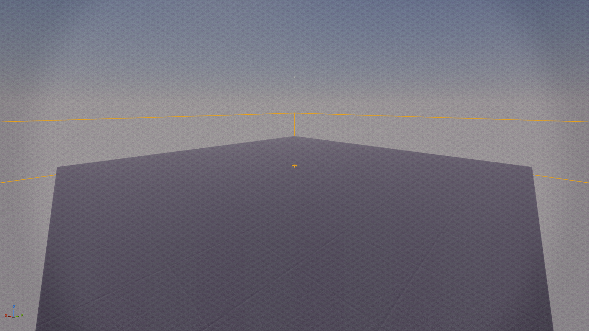

Celestial
Nebula Surface
Constellation ramps, parallax nebula, galaxy emission, and soft sparkle for magical props.
Open-world styling fantasy portfolio
Stylized environments, magical surface systems, and Unreal tools for teams building emotional exploration games.
Arranged like a fantasy game site: worlds first, looks second, features third, with technical guides close at hand for production review.
Worlds
The page opens like a game destination reveal: a hero image, a clear mood statement, and fast proof that the environment work is both charming and production-aware.

Sakura Path Lookdev
The scene direction favors player-readable shapes, soft atmospheric contrast, and surfaces that feel styled rather than merely textured.
Blossom drift, lantern warmth, moonlit stone, and soft silhouette hierarchy.
Designed around a clear visual path that can scale into open-world discovery spaces.
Backed by render manifests, stats, material families, and GitHub Pages deployment configs.
Looks
Instead of burying shader work in a table, the page frames each material direction as a collectible look: celestial, blossom, gilded, and garden.
Constellation ramps, parallax nebula, galaxy emission, and soft sparkle for magical props.
Projected flower shadow, warm pink palette, and stylized sparkle for garden storytelling.
Baroque ornament, metallic response, height detail, and editorial surface richness.
Zen material families for calm stone, moss, paper, cedar, basin, and path surfaces.
Features
The visual pitch is whimsical, but the support structure is practical: reusable shaders, PCG graph contracts, and generated web-ready manifests.
A shared Unreal material architecture for surface variation, fantasy accents, and technical consistency.
Reusable Geometry Nodes and PCG pages for rocks, foliage, blossom paths, lantern groves, meadow bloom, and exclusion zones.
Unreal outputs become web-ready hero frames, render metadata, and deployable GitHub Pages layouts for Wix iframe use.
Pear-fect Guides
The page keeps a game-site mood, then routes leads to the exact data they need: portfolio package, materials config, render plates, and passport stats.
Single sendable reviewer path with strongest work, outreach kit, art-test readiness, and automation links.
Infold-facing reviewer path for art direction, technical systems, and application positioning.
Environment mood, composition, material language, and production proof in one case-study read.
Focused delivery plan for a stylized environment, shader, and procedural dressing test.
Sorting system for Drive renders, paintings, concepts, process images, and technical proof.
Unreal material pages for universal master, graph, water, trimsheets, and VFX support.
Procedural scatter, rock generation, Blender asset handoff, and Unreal PCG pages.
Palette, typography, layout rules, route inventory, and publishing contract.
Service menu for hero renders, stylized shader lookdev, and technical breakdown pages.
Contact
Use the GitHub Pages URL as the Wix iframe source. The portfolio now includes dedicated pages for hero renders, Unreal shader breakdowns, Geometry Nodes systems, and commissions.